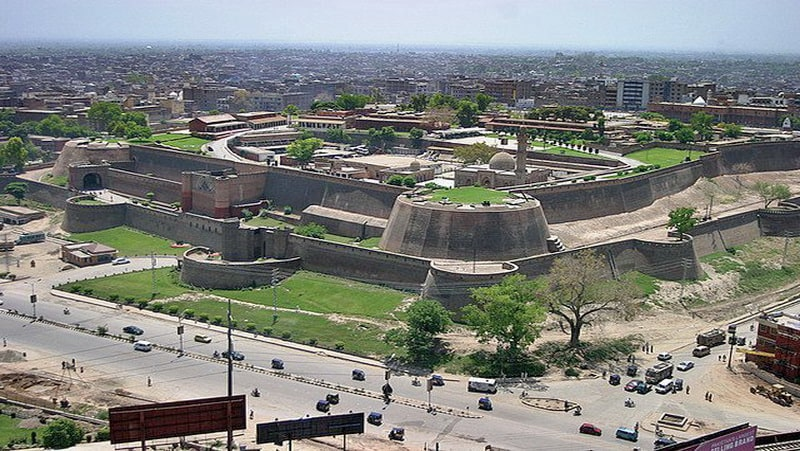

<div class="portfolio-single-load clearfix">
    <div class="custom-full-width-box">
        <div class="custom-container">
            <div class="custom-row align-items-center">
                <div class="custom-image-column">
                    
                </div>
                <div class="custom-text-column">
                    <h2 class="custom-heading">Bala Hisar Fort</h2>
                    <p class="custom-paragraph">
                        Discover the military legacy of Peshawar at the Bala Hisar Fort, whose origins date back over 2,000 years to the ancient Kushan period. Strategically located atop a hill overlooking the city, the fort has been repeatedly rebuilt and renovated by various rulers, including the Mughals, Sikhs, and British. Today, the fort serves as a symbol of Peshawar's resilience and heritage, offering panoramic views of the city and housing military installations and government offices.

                    </p>
                </div>
            </div>
        </div>
    </div><!-- .custom-full-width-box end -->

</div><!-- end single-project -->
